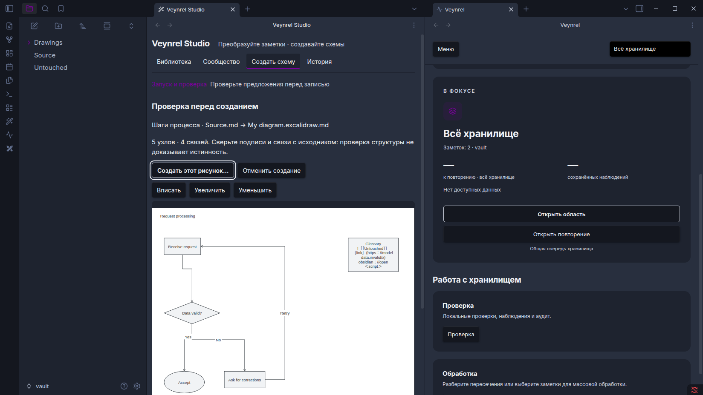
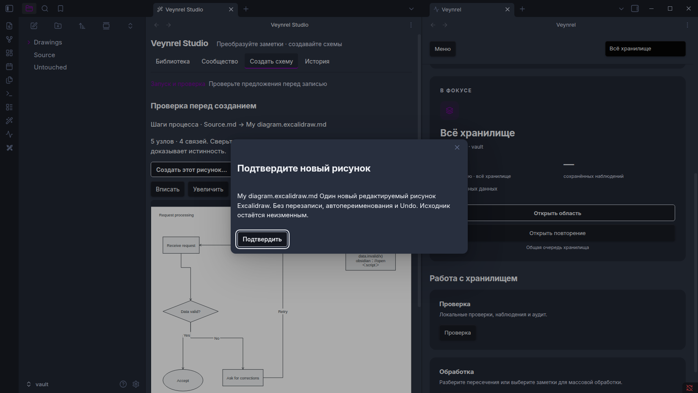
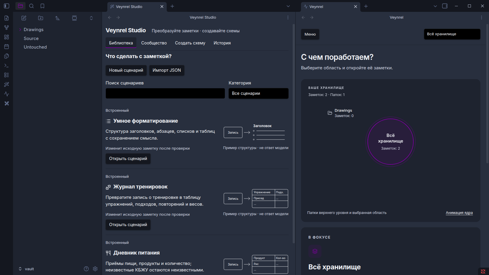
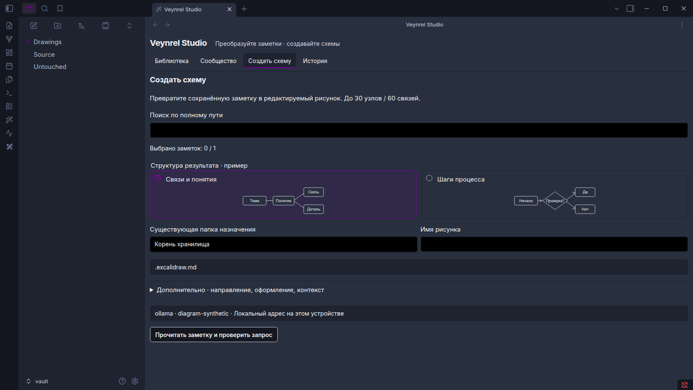
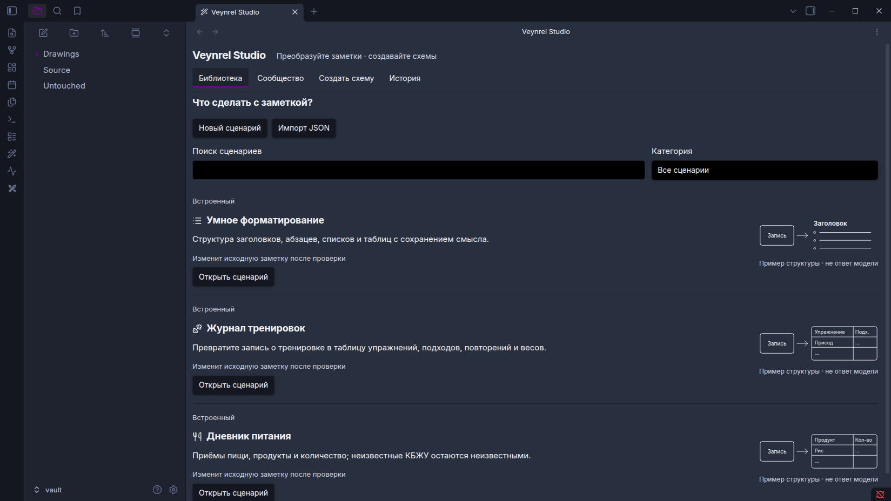
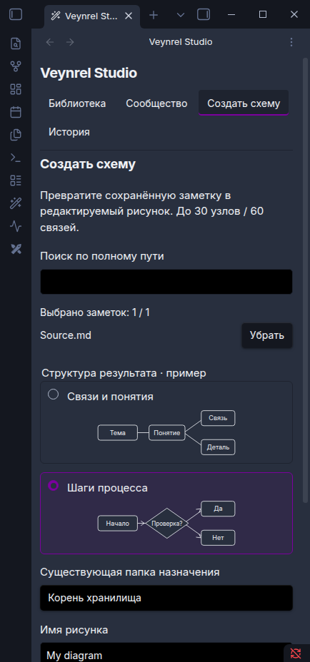
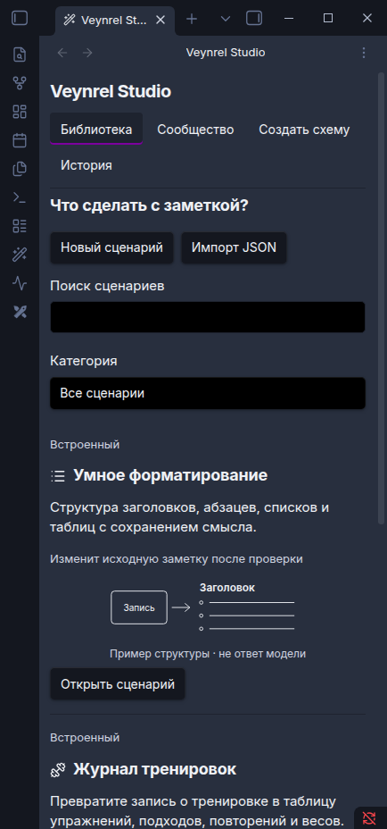
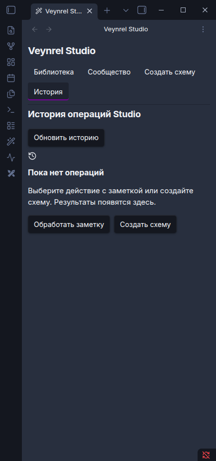

Читаемость действий: native evidence
Полные кадры Obsidian 1.13.7; синтетические заметки. Без ретуши. Статусы и SHA256. Текст ≥4.5:1; фокус ≥3:1. Renderer limitation сохраняется отдельно.
Red Graphite: Health / Studio и главные действия
Red Graphite: настоящее подтверждение, видимый фокус
Health / библиотека в одной пользовательской теме
Компактный старт схемы
Библиотека
Пустая история Схема: панель 390 px
Схема: панель 390 px
Библиотека: панель 390 px
История: панель 390 px